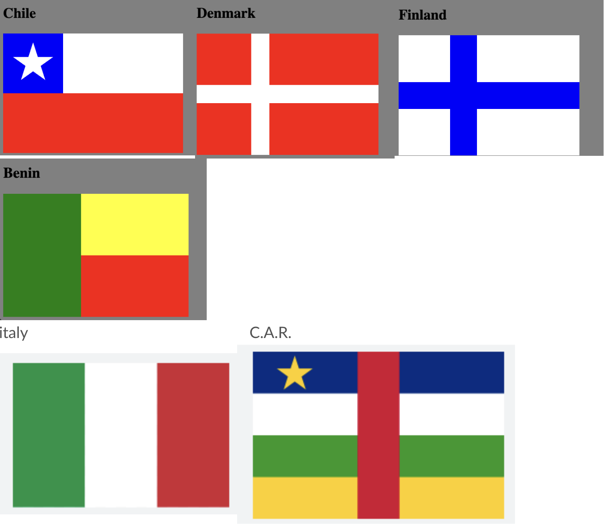

WEB Fundamentals
WDD 130
ICE Challenge: Country Flags using CSS Grid
Overview
- Task: Style country flags using CSS grid.
- Purpose: Practice using css grid alignment properities in different layouts.
Instructions
-
Open the files
Download the starter files
Start by downloading the zip file: Grid Flags and unzipping it and saving the grid_flags folder in your ice folderOpen in VS Code
Open the grid_flags folder in VS Code, then locate flags.html and open to edit.
-
Create the flags with CSS grid
Write the CSS, but don't change the HTML!
The html code below has the starting structure for four flags. Chile has the css given to you to demonstrate how to use the grid to position the elements of the flag. Your challenge is to use css on the other div's to create the Denmark, Finland, and Benin flags. Super bonus: create the html and css for Italy, and Central African Republic flags.
-
Submit
Since there is only one file submit flags.html